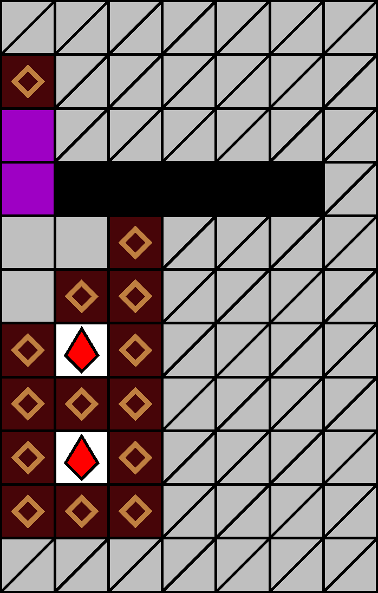
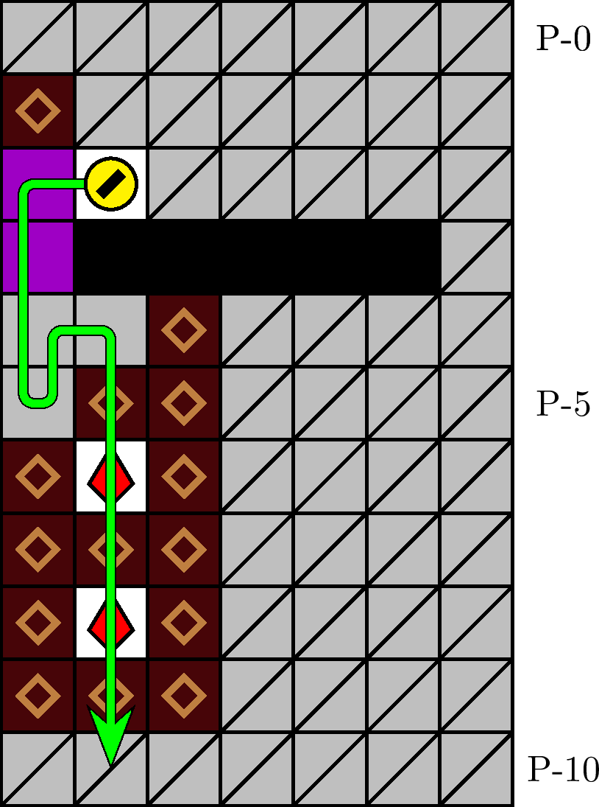

一般指針
エリア・タワー


指針
タワーは，進入の後に窪み P-(4, −2) へ退避します．塊が連鎖を起こさなかった場合は，直下掘りによりザクロを取得しながら潜行します．
解説
タワーとは，図 3.2.1.1 のエリアを指します． 100 m, 400 m, 700 m, 900 m型の 61 行目に確率で出現します． P-3 行目の壁の配列によって同定されます．図 3.2.1.2 の経路が定型です．
経路の始点にあたる座標 P-(2, −2) （図 3.2.1.2 の犬の位置）は，必ず石です．
ステージの形状や進行によっては，犬が窪みに進入した後も，塊が座標 P-(5, −3) に落下せず，連鎖が起こらない場合があります．このときは，直下掘りによって −2 列の塊を吸引・破壊し，ザクロを取得しながら潜行します．
ステージの進行によっては，座標 P-(2, −3), (3, −3), (4, −3) のいずれかが塊によって塞がれる場合があります．このときは，圧迫に注意しつつ障害を破壊し，経路を通過します．
上記いずれの場合も，別ルートとして， 1 つ目のザクロを取得した直後に右隣 P-(6, −1) の塊を破壊し，タワーの連鎖を狙う方法があります．経路の通過と比較するとわずかに迂遠ですが，タワー外への移動が可能になるため，レーザーステージにおいては有効です．
注意: レーザーステージにおけるタワーへの進入は，タイミングによっては大変危険です．「愚形・タワー（レーザー）」を参照してください．
経路に基づくタワーへの進入が危険または迂遠な場合は，座標 P-(3, +3) を通過し，タワーを右方または下方から破壊する方法が考えられます．タワーの推奨される破壊方法は連鎖です．座標 P-(5, −1) の塊を破壊すると，連鎖によってタワーを一度に破壊することができます．座標 P-(6, −1) の塊を破壊し，その直左のザクロを取得することでも連鎖を実行できます．タワー直下（下方）のブロックを破壊することでタワーを落下させる方法も有効です．これらのいずれも迂遠な場合は，タワーを無視して潜行します．